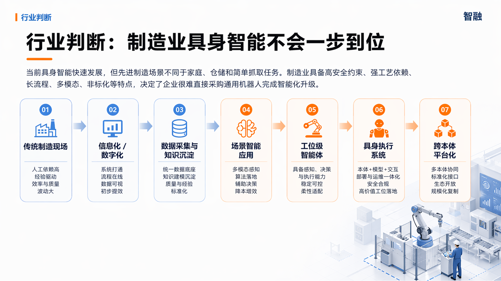

Solutions
我们帮助客户，把现场经验变成可用系统
从资料整理、人员培训、操作指导到机器人执行验证，智融围绕真实工位做能被一线使用的工具。
现场资料整理
把设备状态、工艺文件、质检记录和操作视频整理成可查询的知识库。
培训与操作指导
用 XR/AI 工具帮助新员工理解步骤、识别风险、减少对口口相传的依赖。
复杂操作数据采集
通过遥操、共享自主和触觉视觉融合，把真实操作过程转化为可训练数据。
工位级机器人验证
针对装配、检测、分拣等明确场景，验证机械臂、末端和软件协同效果。
Deployment Path
先把现场跑顺，再谈更深的自动化
很多企业真正需要的第一步，是把数据、流程和人员经验整理清楚。等工位任务、验收标准和数据来源稳定后，机器人执行才有可靠基础。
沟通具体场景